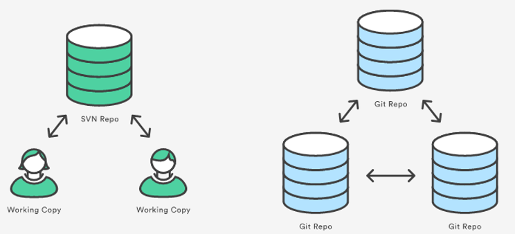
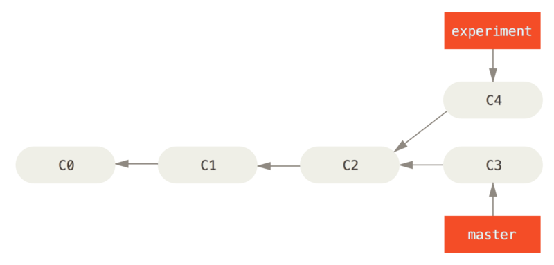
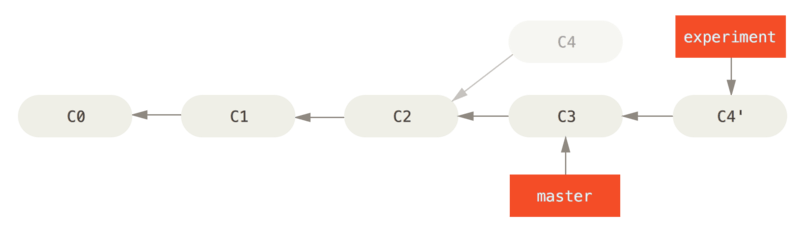
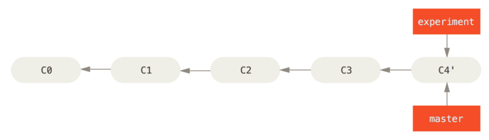
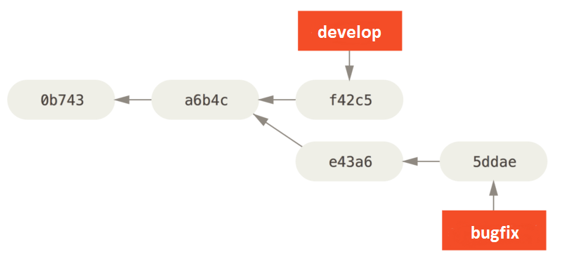
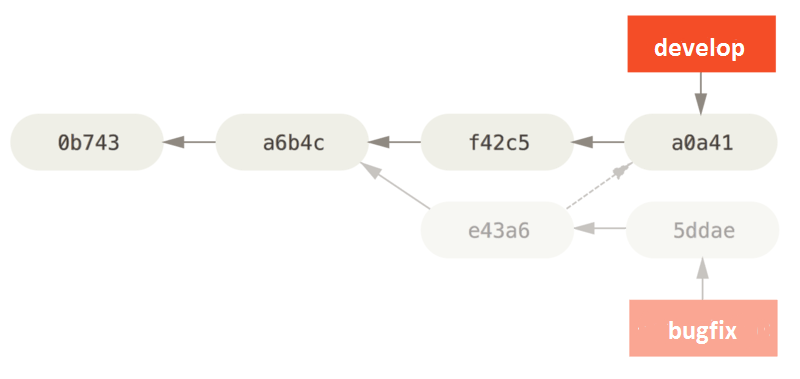
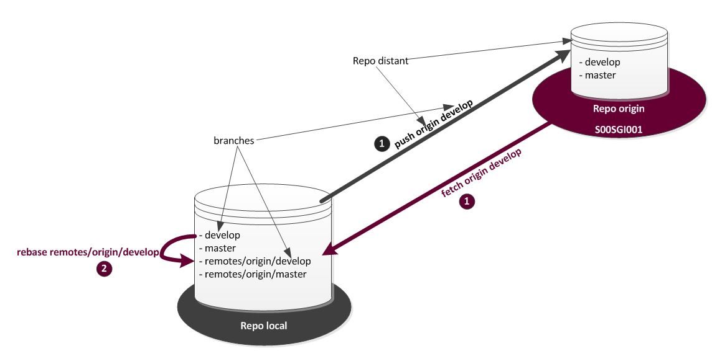
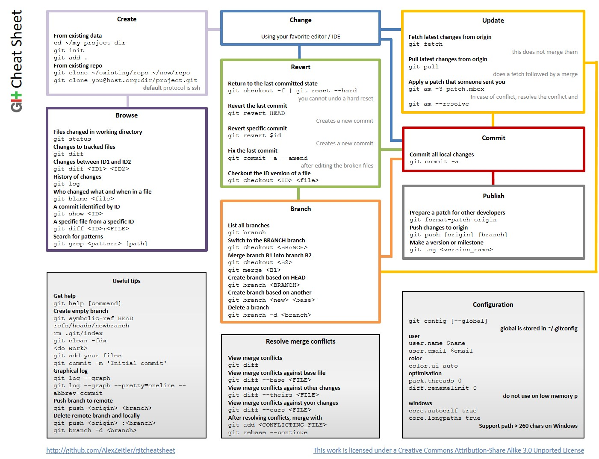

$ git config --global user.name "John Doe"
$ git config --global user.email johndoe@example.comGIT

Archi - coding dojo IT/SPI - v1.0
Centralisé vs Distribué
(Central Repo vs Repo to Repo collaboration)
(SVN vs Git)

SVN
lors du checkout d’un branche seule la derniere version des objets est récupérée
toutes les opérations nécessitent un accès serveur (historique, comparaison, commit …)
Git
lors du clone d’un dépot, c’est le dépot complet qui est dupliqué
la plupart des opérations sont réalisées en local (historique, comparaison, commit …)
Gestion des données
(differences vs snapshots)
(SVN vs Git)


SVN
procède par différences avec l’objet original
les opérations de comparaison nécessitent un accès serveur
Git
se base sur des snapshots
enregistre tout le contenu de chaque objet modifié lors de chaque commit.
les opérations de comparaison sont réalisées en local
Configuration
Configuration globale (1/2)
Fichier ~/.gitconfig
Spécifique à l’utilisateur
On force Git à lire et écrire dans ce fichier en passant l’option --global
Configuration globale (2/2)
à minima configurer son identifiant et son adresse mail:
pour visualiser tous les parametres:
$ git config --listConfiguration locale
Configuration spécifique au seul dépôt en cours
Fichier du dépôt: .git/config
Le dépôt local
Initialiser un dépôt GIT
Dans le répertoire cible:
$ git initou s’il on veut créer le répertoire en même temps que l’initialisation du repo:
$ git init nomDuRepoCloner un Repo GIT:
$ git clone urlDuRepoou
$ git clone urlDuRepo clonedRepoNameLes zones (1/2)

Les zones (2/2)
Git gère les versions des fichiers locaux grâce à trois zones:
working directory qui est l’espace de travail qui contient les objets du projet que l’on peut manipuler ou modifier
staging (ou index) qui est une zone de validation pour les objets modifiés/créés que l’on souhaite voir apparaître lors d’un prochain commit (c’est ce qui partira lors du prochain commit)
git directory qui regroupe l’historique des commits, des références, des branches, …
Le cycle de vie d’un fichier (1/2)

Le cycle de vie d’un fichier (2/2)
Git dispose de 4 états pour gérer un fichier:
untracked: fichier inconnu de Git (non versionné)
unmodified: fichier identique à la dernière version validée (commitée)
modified: modifications en cours sur un fichier connu(tracked) de Git
staged: modifications validées dans le staging (ces modifications partent au prochain commit)
Ajouter un objet modifié (nouveau ou pas) à l’index
$ git add <file>ou s’il on veut indexer tous les fichiers:
$ git add .Enlever (sans le supprimer) un objet de l’index
$ git rm --cached fileNameValider un changement (commit)
$ git commit -m "message"/!\ : Contrairement à SVN, le commit Git est une opération locale !
Visualiser l’historique des versions
l’historique des versions
$ git logvisualiser le contenu d’un objet
$ git show [commit id], ou branchesLe commit
bonnes pratiques
un commit doit être atomique
⇒ ne pas couvrir plusieurs uses cases
⇒ ne concerne qu’un seul sujetun commit doit fonctionner
⇒ compiler, builder, …un commit doit avoir du sens
⇒ fonctionnalité, bugfixing, …commiter souvent et amender les commits
⇒ $ git commit --amend
Empreinte sha-1 (1/2)
Lors de l’indexation d’un fichier:
Git calcule une empreinte via la fonction de hachage sha-1
Git stocke ensuite cette version du fichier dans le dépôt Git (blobs)
Git ajoute cette empreinte au staging
Empreinte sha-1 (2/2)
Lors de chaque commit:
Git crée une empreinte de chaque sous-répertoire et stocke ces objets de type arbre dans le dépôt Git
Git crée alors un objet commit qui contient les méta-données et un pointeur vers l’arbre de la racine du projet de manière à pouvoir recréer l’instantané à tout moment
Ce hash est l’indentifiant du commit
Les branches
Qu’est-ce qu’une branche ?

Une branche dans Git est un pointeur vers un commit
La branche par défaut dans Git s’appelle master
À chaque commit sur une branche, le pointeur de cette branche avance automatiquement.
Head

HEAD est un pointeur qui indique le commit sur lequel nous sommes positionné
Par défaut, HEAD pointe sur la branche master
Lorsque l’on réalise le checkout d’une branche on positionne HEAD sur le pointeur de cette branche
Créer une branche
$ git branch feature1/!\ : le fait de créer une branche ne veut pas dire que l’on soit assis dessus…
Switcher sur une branche
$ git checkout feature1Lister toutes les branches
$ git branch -a -vvSauvegarder temporairement sans commiter
$ git stashRevenir sur sa sauvegarde temporaire
$ git stash applySupprimer une branche
$ git branch -d feature1s’il l’on veut forcer la suppression d’une branche
$ git branch -D feature1/!\ : on ne peut pas supprimer la branche sur laquelle on est assis…
Reset
$ git reset [soft, mixed ou hard] [idCommit]Fonctions
Déplacer le sommet d’une branche sur un commit donné pour:
Annuler les modifications en cours dans le working directory
Annuler le ou les derniers commits (on recule la branche)
reset soft


Ne touche ni à l’index ni au working directory
Uses cases:
modifier l’index et commiter (equivalent commit --amend)
on travaille sur la mauvaise branche
reset mixed

modifie l’index mais pas le working directory
Uses cases: on ne souhaite pas commiter nos dernieres modifications
reset hard

reset l’index et le working directory
Uses cases:
on revient à la situation d’un commit précédent
on poubellise
reset "path"

permet de désindexer un fichier
reset vs checkout

reset déplace le "pointeur" sur un commit de la branche pointée par HEAD
checkout déplace HEAD pour qu’il pointe sur une branche donnée
Les dépôts distants
Ce qu’il faut savoir
Un dépot distant est un dépôt comme un autre
Il est juste "distant" par rapport au dépôt local
On peut connecter autant de repos distants que l’on souhaite
Par convention, l’alias origin est utilisé pour nommer le dépôt de partage
Ajouter un repo distant
("connecter" un repo distant)
$ git remote add repoAlias repoUrlLister les repos distants
$ git remote -vvRetirer un repo distant
("déconnecter" un repo distant)
$ git remote remove repoAliasEnvoyer (pousser) les changements vers un repo distant
$ git push repoAlias branchName/!\ : si la branche n’existe pas dans le repo distant, celle-ci est automatiquement créé.
Récupérer les derniers changements d’un repo distant
$ git fetch repoAliasLe fetch met à jour la référence locale(miroir) d’une branche distante (remotes/repoAlias/branchName).
/!\ : Cette opération ne modifie pas vos propres branches locales
Les opérations merge & rebase
Merge (1/2)
merge = fusionner deux branches (merge commit)


Merge (2/2)
$ git checkout currentBranch
$ git merge branchToMergeExemple:
$ git checkout master
$ git merge experimentRebase (1/3)
rebase = rejouer des commits d’une branche dans une autre

Ici on rebase la branche experiment sur master ⇒ C4 est réappliqué sur C3
Rebase (2/3)
$ git checkout currentBranch
$ git rebase onBranchExemple, on rebase la branche experiment sur master:
$ git checkout experiment
$ git rebase masterRebase (3/3)
/!\ : Rebaser change les empreintes SHA-1 de ces commits, ce qui les rend nouveaux aux yeux de Git.
Pour conserver un historique propre, le rebase d’une branche public (master par exemple) est à éviter.
Fast forward (1/2)
fast forward = merge(fusion) en avance rapide
Aucun nouveau commit n’est créé lors d’un merge FF
Git avance juste le pointeur de la branche en court
Fast forward (2/2)
Dans l’exemple ci-dessous le commit c4' a c3 comme prédécesseur direct. Il suffit de "merger" la branche experiment dans master pour que master pointe elle aussi sur le commit c4'. Aucun nouveau commit sera créé, Git avance juste le pointeur de la branche master.
$ git checkout master
$ git merge experiment
cherry-pick (1/2)
un cherry-pick peut être vu comme un rebase appliqué à un seul commit
un cherry-pick consiste à prendre le patch introduit par commit et de l’appliquer sur la branche sur laquelle on se trouve
le cherry-pick est très utile lors d’un report de code de bugfix dans la branche de developpement
cherry-pick (2/2)
exemple: on patche le commit e43a6 sur la branche develop
$ git checkout master
$ git cherry-pick e43a6fd3e94888d76779ad79fb568ed180e5fcdf 
merge ou rebase ?
Je merge une branche lorsque celle-ci doit apparaitre du début à la fin dans l’historique.
On merge toujours dans la branche masterJe rebase lorsque mon travail local (l’ensemble de mes nouveaux commits) part d’une base obsolète
pour mettre à jour mon repo local:
fetch et rebase sur la branche distantequand je me vois refuser le push parce que des mises à jours ont été pushés entre-temps
Les opérations fetch & pull
fetch
$ git fetch repoAlias branchNameLe fetch met à jour la référence locale(miroir) d’une branche distante (remotes/remoteRepoName/branchName).
/!\ : Cette opération ne modifie pas vos propres branches locales
pull
$ git pull repoAlias branchNamepar défaut, git pull = git fetch + git merge
le pull met à jour la référence locale d’une branche distante et la fusionne avec la branche locale
depuis 1.8.5 on peut réaliser le pull avec un rebase:
$ git pull --rebase=preservepour généraliser le pull rebase:
$ git config --global pull.rebase preserve
Mise à jour du repo local

Les principales commandes Git
